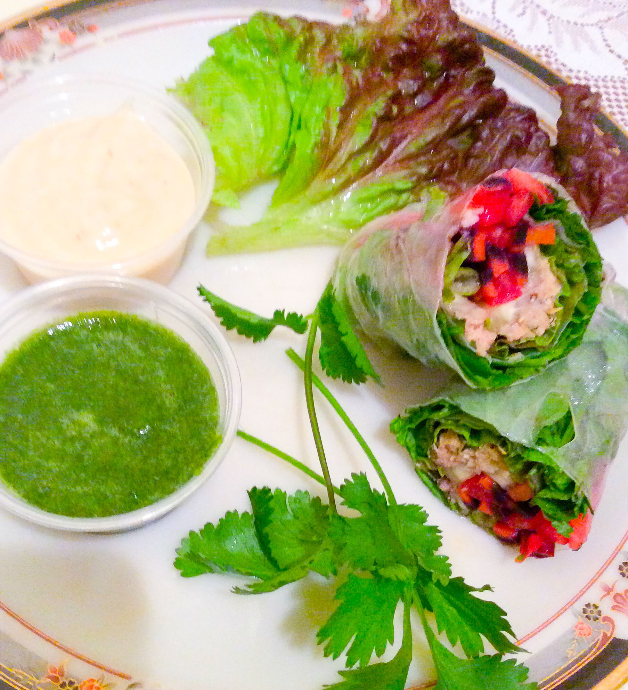

Thai Spring Rolls

Ingredients
- 1 can tuna, drained
- 2 Tbsp minced onion
- 1 tsp vegetable oil (omit if your tuna is packed in oil)
- 1 Tbsp oyster sauce
- Black pepper, to taste
- Dash soy sauce, to taste if needed
- 1 cup sprouts of your choice or lettuce
- 1/2 cup julienned carrots
- 1/2 tomato, seeds removed, julienned
- 1 regular cucumber cut into sticks
- 8-10 Thai basil, mint, and cilantro leaves
- 4-5 sheets rice paper (8.5-inch)
Directions
- Blanch carrots and cucumber for 1 minute in boiling water
- Combine tuna, onion, oyster sauce, oil, soy sauce, and black pepper
- Dip the rice paper into warm water for several seconds just until it becomes pliable
- Place the paper on a flat plastic or ceramic surface
- First place some sprouts/lettuce at the end 1/3 of the sheet closer to you
- Then add some of the carrot, cucumber, tomato and tuna mixture on top
- Place Thai basil, mint and cilantro close to the far edge of the paper
- Do not over-stuff your roll, start small then continue to add more fillings if needed
- Roll tight about one rotation, then fold in the sides and then roll until sheet ends
- Serve with your favorite dipping sauce